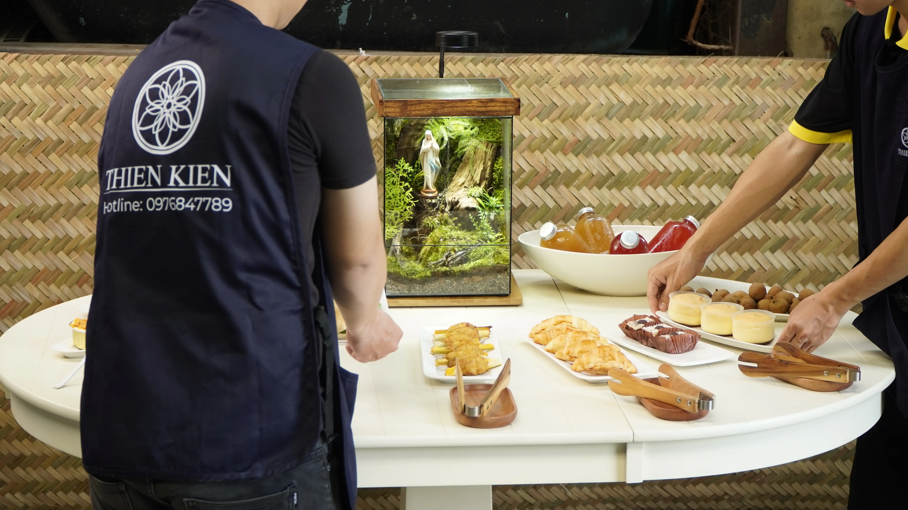
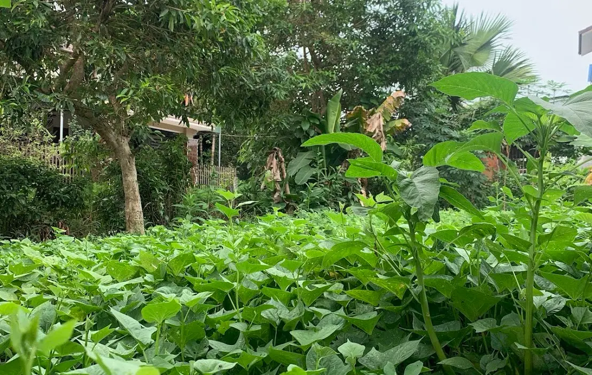
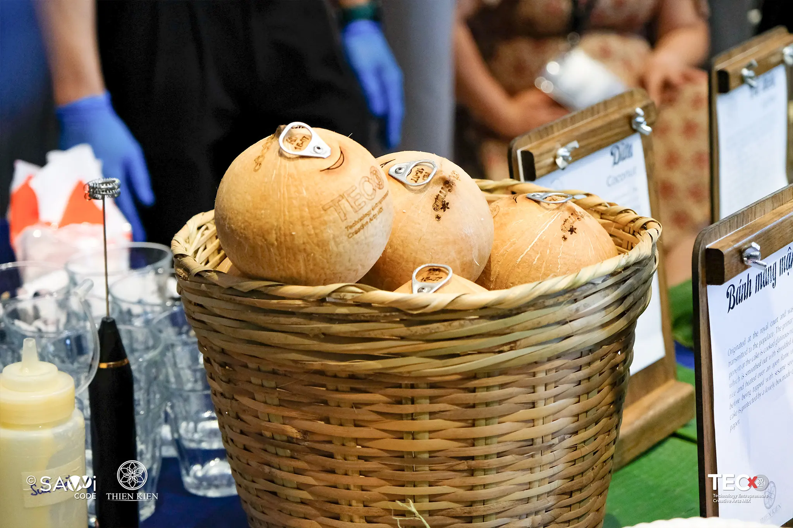
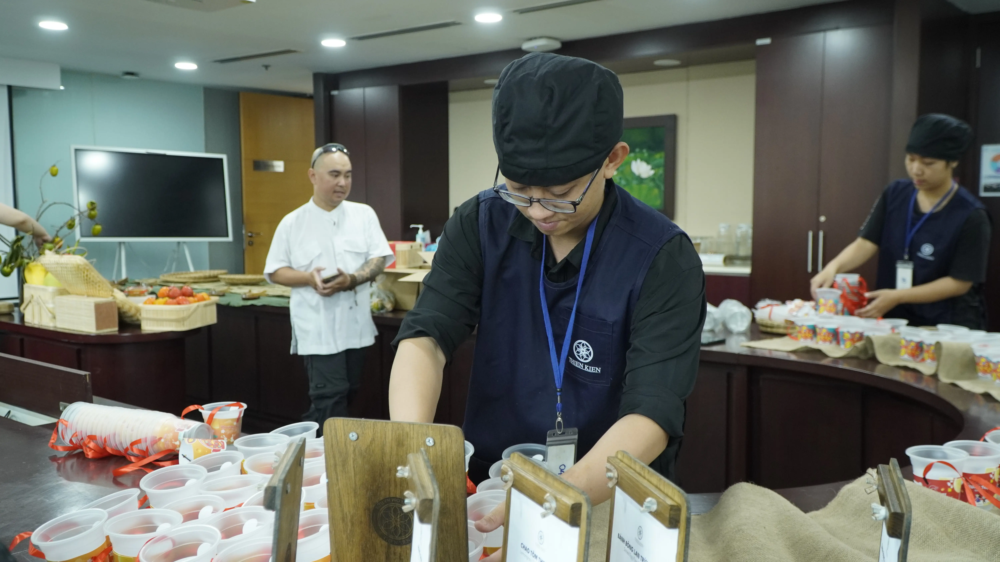

There are things about a culture that cannot be fully understood through museums, guidebooks, or statistics. Sometimes, they only truly reveal themselves at a dining table.
Not through grand gestures, but through very small details: what people choose to serve, how ingredients are prepared, how a guest is welcomed, and the quiet stories that exist behind a meal.
Hospitality is often associated with hotels, restaurants, cafés — what the industry now commonly refers to as HORECA. But to us, hospitality has always meant more than service.
It is the way people see and value one another through what is placed on the table.

From seasonal fruit to an expanding philosophy.
Thiện Kiến began with a very simple idea: bringing seasonal Vietnamese fruits to international offices in Ho Chi Minh City. At the time, we were not thinking about hospitality as a philosophy. We simply wanted to bring carefully grown produce into spaces where food was gradually becoming detached from its origins.
From seasonal fruits, we moved into teabreaks and finger food for international conferences. From those conferences came private gatherings for founders, investors, and leadership teams. Alongside them were corporate gifting projects that gradually led the Thiện Kiến team across different regions of Vietnam — searching for ingredients, local products, and crafts that still carried the distinct character of the places they came from.
• • •And somewhere along the way, we began to realise something. Behind every ingredient was not only flavour. There was also a way of thinking — a relationship between people and the land they live on, between climate and memory, between geography and the way people continue living through generations.
A mountain herb from northern Vietnam reflects living conditions entirely different from ingredients shaped by the hot and humid climate of the South.
And hospitality, perhaps more than anything else, is the space where those differences can still be felt clearly. Not preserved behind the glass of a museum, but experienced directly through lived encounters.


Vietnam is not a single, unified culture.
We often speak about "Vietnamese culture" as though it were a single, unified entity. In reality, Vietnam is shaped by many different cultural environments — formed through rivers, mountains, coastlines, migration histories, and the intersection of diverse ethnic communities.
From the waterways of the Mekong Delta to the highlands of Tây Nguyên. From the central coastline to the northern mountains and the Red River Delta, each region carries its own rhythm of life.
These differences quietly shape the way hospitality is expressed — from how people seek spiritual meaning through beliefs and local faith practices, to festivals held in gratitude for the land, the heavens, and the harvests, and even the way gifts are offered to honoured guests who pass through.
Creating spaces where culture can still be experienced honestly.
Over the years, we came to understand that hospitality is not only about making guests feel welcome. It is also about creating spaces where culture can still be experienced honestly. Not performed. Not exaggerated. Not reduced to spectacle.
Genuine hospitality cannot be performed. People can always sense the difference between rehearsed service and a welcome that comes from genuine understanding.
Over time, that belief began shaping Thiện Kiến from within.

The first people to experience our products are never the guests.
At Thiện Kiến, the first people to experience our products are never the guests. They are our own team. The people preparing each event are also the ones tasting the ingredients, trying the herbal blends, handling every gift, and understanding the stories behind them before anything is brought to someone else.
We do not build culture through slogans. We let people directly experience what they are about to serve. Because hospitality only becomes sincere when the person serving truly understands the value of what is being placed in front of another human being.
We hope people leave with a little more curiosity about Vietnam.
That is why, at every event Thiện Kiến accompanies, our intention has never been limited to attentive service or creating a beautiful setting.
We hope people leave with a little more curiosity about Vietnam. Sometimes, that curiosity begins with very small things: a fruit they have never heard of, a botanical drink that reminds someone of home, a small gift handed directly to them, a brief story about where an ingredient was grown, or a flavour that feels unfamiliar at first, yet lingers in memory long afterwards.
To us, these small moments are also hospitality.
Hospitality is not only about serving people. It is also a way of shortening the distance between cultures — the moment a culture begins to speak to the outside world.